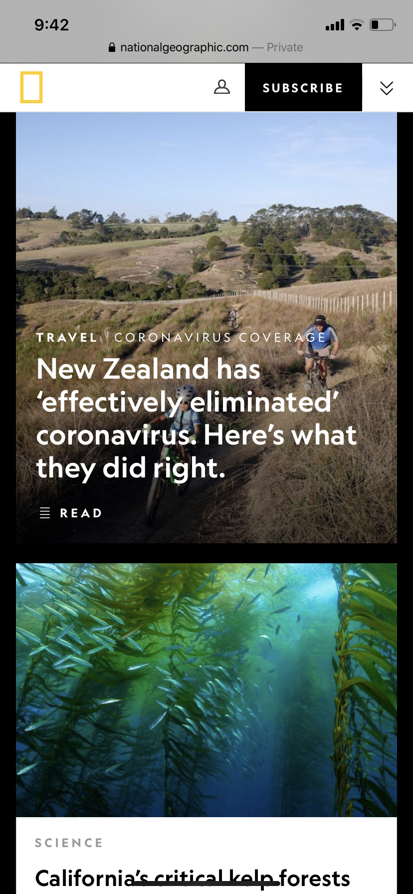
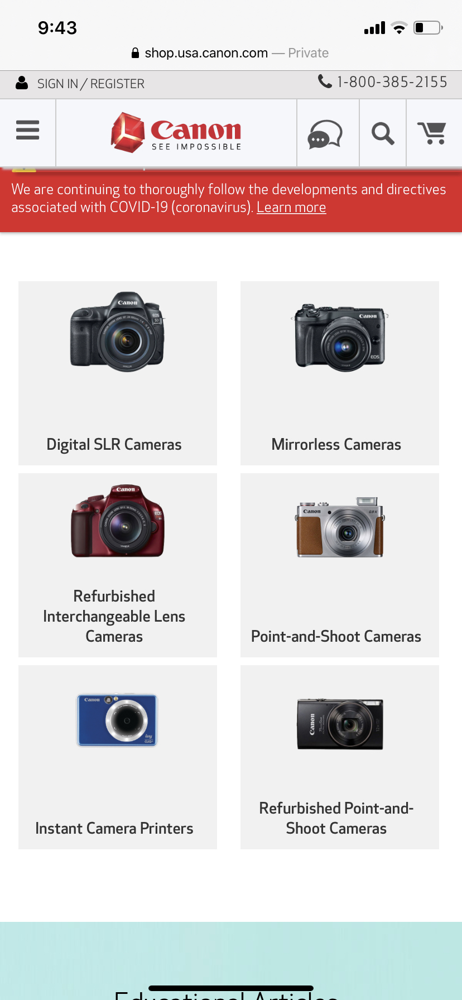

White Space:
Amazon
https://amazon.com/- Amazon does a great job by showing people how to utilize their white space by maximizing the number of products they have to sale. There aren't just one or two cozy slippers, rather, a different variety to help customers get an idea of what style they might like.
Rule of Thirds:
National Geographic
https://nationalgeographic.com - National Geographic shows rules of thirds really well with the different pictures they've chosen. The two men riding the bikes aren't directly in the center, rather off to the side. The fish are in the top left as well, letting the readers eyes absorb everything in the picture without overwhelming them.
Proximity:
Canon Cameras
https://shop.usa.canon.com - This website shows proximity through the placement of their cameras. Because the items are grouped together in an organized way, and they are close to one another, we consider them all part of one group. If they were spread out evenly, we wouldn't know where one stopped and the next started.